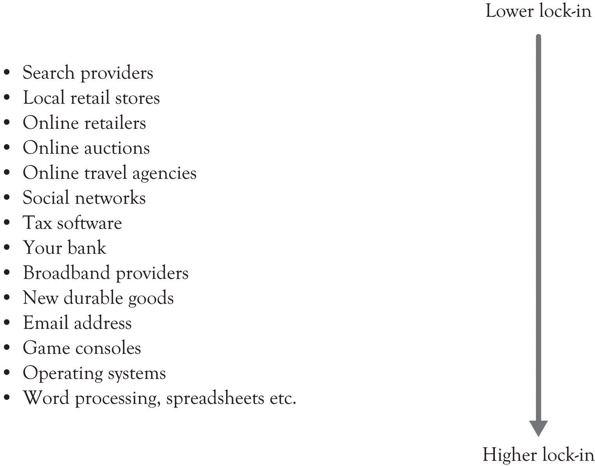

Switching costsCosts that result from switching to a new product or service. are the costs that result from switching to a new product or a new service. They are often viewed in terms of dollars but they can also be conceptualized in terms of time and psychological effort. Switching costs can include early termination costs, the amount of time and effort to switch, all learning costs required to understand the new product or service, cash outlays for switching, and even the emotional discomfort caused by switching.Burnham, Frels, and Mahajan (2003). The goal of buyers is to try and avoid switching costs and not be locked-in to a particular product, service, or technology. Buyers want flexibility and they try to avoid lock-in.
The goal of producers is to essentially lock-in their customers and lock-out the competition. This is accomplished by creating a value proposition for their customers and make it difficult for them to leave the fold because of the high switching costs. Here is a list of situations that result in product and service lock-in:This section is based on Kaplan and Norton (2003a, September 15); Shapiro and Varian (1998).
Figure 10.2 "Levels of Lock-In for Several Businesses" illustrates the author’s view of the degree of lock-in for several business activities. One particular interesting example of lock-in is related to social networking sites such as Facebook, MySpace, and LinkedIn. Social networking sites have an abundance of features that facilitate lock-in. First, they encourage the development of very strong emotional ties among the participants. Secondly, some of them attempt to thwart searching by search engines. And finally, they encourage the customization and control of the home screen. Our research has found that if you can give users the ability to control and customize their environment, then they will begin to exhibit feelings of ownership toward a virtual place.Jo, Moon, Garrity, and Sanders (2007). It appears that in some people, the emotional ties are stronger than the ties exhibited by some individuals toward a house or a car. In addition, there is a positional effect. This can reduce the influence and reduce the network effects:
Figure 10.2 Levels of Lock-In for Several Businesses
Positional goods purchases, consequently, are interdependent: what we buy is partially a function of what others buy. Put another way, the value of a positional good arises in part from social context. The positionality of a particular good is often two-sided: its desirability may rise as some possess it, but then subsequently fall as more possess it.… A particular fast car is most desirable when enough people possess it to signal that it is a desired object, but the value diminishes once every person in the neighborhood possesses one. Nothing about the car itself has changed, except for its ability to place its owner among the elite and to separate her from the crowd. Similarly, part of the appeal of a “fashionable” resort is that only a few people know about it, or are able to afford it. For these goods, the value of relative exclusivity may be a large part of the goods’ total appeal.”Raustiala and Sprigman (2006), p. 1719.